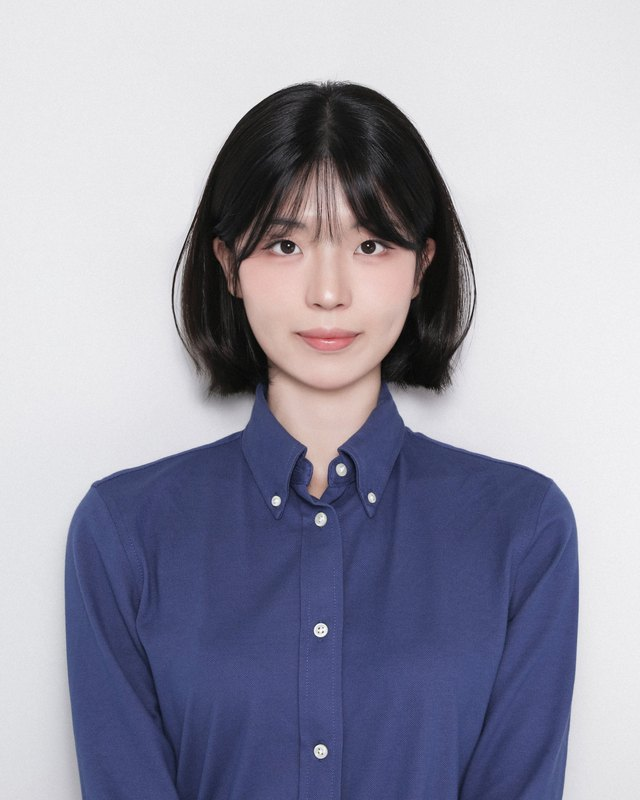

2025.08
놀러와요 인후의 숲 ↗
멋쟁이사자처럼 13기 중앙해커톤
인하대 후문 식당 사장님의 ‘퀘스트’를 수락하고, 방문 후 영수증으로 인증하면 포인트가 쌓이는 앱입니다. 후문 상권 방문을 게임처럼 즐길 수 있게 만들었습니다.
- 영수증 촬영 인증 카메라와 포인트 선물 상점
- 식당 도감, 취향 질문으로 식당을 추천하는 AI 챗봇 화면
FE · UI 디자인 — React Native, Expo, TypeScript
인하대학교 인공지능공학과에서 공부하며 경제학을 부전공하고 있습니다. 2025년 한 해 동안 네 개의 서비스에서 프론트엔드 개발과 UI 디자인을 맡았고, 금융 데이터를 이해하는 AI 개발자를 목표로 하고 있습니다.

멋쟁이사자처럼 13기 중앙해커톤
인하대 후문 식당 사장님의 ‘퀘스트’를 수락하고, 방문 후 영수증으로 인증하면 포인트가 쌓이는 앱입니다. 후문 상권 방문을 게임처럼 즐길 수 있게 만들었습니다.
FE · UI 디자인 — React Native, Expo, TypeScript
인하대학교 지역상생 아이디어 공모전
인천 섬 지역과 도움이 필요한 기관을 대학생 봉사자와 연결하는 봉사 매칭 앱입니다. 어르신 디지털 교육, 초등 코딩교육처럼 격차를 줄이는 봉사를 담았습니다.
FE · UI 디자인 — React Native, Expo, TypeScript, Context API
멋쟁이사자처럼 인하대 해커톤
유기동물과 임시보호자를 연결하는 임시보호 반려동물 매칭 웹 서비스입니다.
FE — React, Vite, JavaScript
제13회 아랩 액셀러레이팅 · 제1회 MOONG 연합 커넥톤
다국적 팀의 메시지에서 문화권에 따라 오해될 수 있는 표현을 AI가 짚어 주고, 직역 대신 비즈니스 맥락에 맞는 번역을 제안하는 글로벌 협업 도우미입니다.
FE · UI 디자인 — React, TypeScript, Zustand, Tailwind CSS
회색으로 표시한 창의혁신과 글로벌은 지금 가장 집중해서 키우고 있는 역량입니다.
소통의 오류와 정보의 격차를 줄이는 개발자가 되고 싶습니다.
xlalrnldud@naver.com